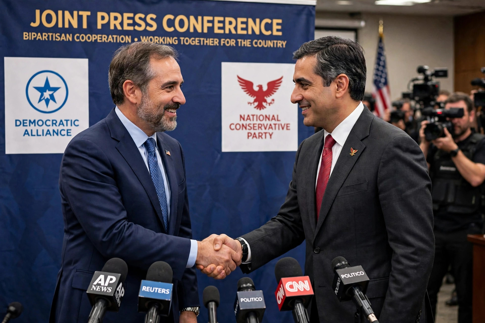

A grand coalition is an arrangement in a multi-party parliamentary system in which the two largest political parties of opposing ideological camps unite in a coalition government. The term is most commonly used in Germany and Austria, where grand coalitions between the major conservative and social democratic parties have repeatedly governed.

Leaders of two rival political parties shaking hands at a press conference.
In Germany a grand coalition (Große Koalition, abbreviated GroKo) joins the Christian Democratic Union/Christian Social Union (CDU/CSU) with the Social Democratic Party (SPD). Such governments ruled West Germany under Chancellor Kurt Georg Kiesinger (1966–1969) and the reunified country under Angela Merkel (2005–2009 and 2013–2021) and again from 2025 under Friedrich Merz — meaning that for much of the twenty-first century the two largest parties governed together. Supporters credit grand coalitions with stability and large reform majorities; critics argue they blur accountability, weaken the parliamentary opposition, and fuel protest parties at the extremes — the AfD became the largest opposition party during the 2017–2021 grand coalition. See Chancellor of Germany.
Austria was governed for much of the post-war era by grand coalitions of the Social Democratic Party (SPÖ) and the Austrian People's Party (ÖVP), a pillar of its Proporz system of shared power. The United Kingdom formed an all-party wartime coalition under Winston Churchill (1940–1945), a broader arrangement than the bilateral grand coalition model. Similar pacts between dominant rivals have occurred in the Netherlands, Iceland, Israel, and elsewhere, usually in crises or under highly proportional electoral systems.
Comparative politics literature on coalition formation in parliamentary democracies.